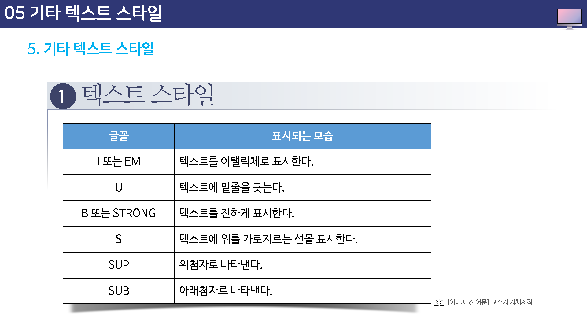
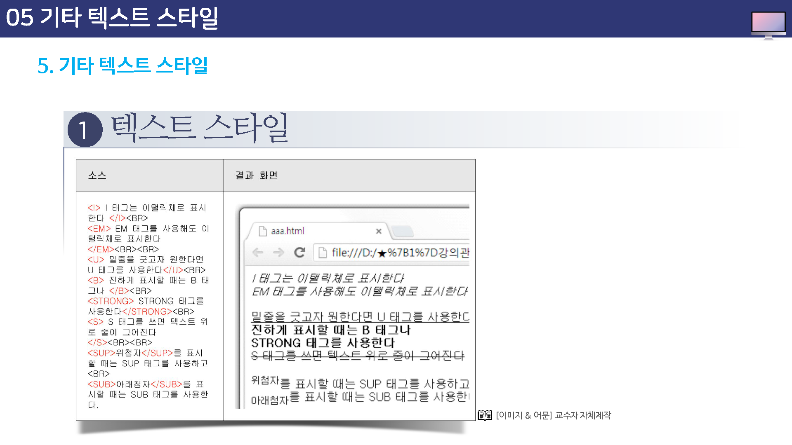

기타 텍스트 스타일
앞서 설명한 <font>속성 이외에도 몇 가지 테그를 이요해서 간단하게 텍스트 스타일을 수정할 수 있다.
여기에서 소개하는 태그는 텍스트 앞뒤에 태그만 붙여주면 된다.
텍스트 스타일
텍스트에 사용할 수 잇는 여러 태그들은 다음과 같습니다.
단, 이 태그들은 여는 태그와 닫는 태그가 함께 쓰이므로 적용할 텍스트 뒤에 닫는 태그를 꼭 붙여야 한다.


특수 문자 표시
특수문자들은 텍스트의 주목 효과를 더 이끌기 위해서 사용되는데 특수문자를 사용하기 위해서는 우선 키보드에서 한글 자은 ㅁ키를 누른 후, 키보드의 한자키를 누르고 화면 오른쪽에 아래를 살펴 본다.
그러면 특수문자들이 나타날 것이다.
문자 앞에는 번호가 붙여있는데 마우스로 원하는 문자를 클릭하거나, 문자 앞의 번호를 키보드에서 눌러주면 된다.
스크롤바를 위 아래로 움직이면 더 많은 특수 문자를 볼 수 있다.